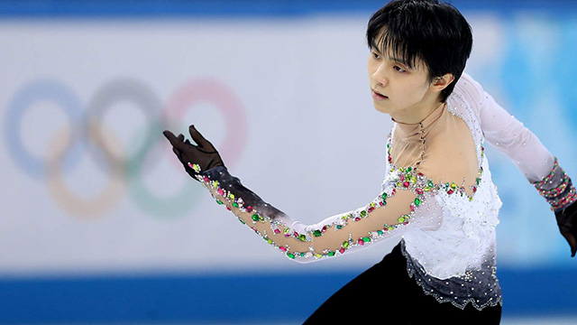

出典：http://livedoor.blogimg.jp
ふとテレビを見て…
NHK杯、グランプリファイナルと羽生結弦選手が止まらない。
報道機関の表現を借りれば、‘異次元’の強さらしい。
フィギュアスケートの内容について私は詳しくないのでコメントは控えます。
では何の話がしたいのか。
それは、彼の『体脂肪率』についてです。
スポーツニュースで羽生選手の体脂肪率が３％だと知りました。
そういえば、どんなに体脂肪率が低いといっても２％とかは聞いたことがないな…。
そう思って調べてみると、拾える限りの情報では３％というのが最低ラインでした（他にはサッカーの長友選手など）。
まあ体脂肪率については、実際にそんなに低いと命にかかわるなんていう意見もあり、本当にそうなのかどうかは分かりません。
ただ、少なくとも羽生選手は、世界でも屈指の細マッチョであるとは言えるでしょう。
そこで、私池村が羽生くんレベルの体脂肪率になるためには、どれぐらいのエネルギーを消費する必要があるのかを考えてみました。
電子レンジで肉まんを
さて、計算をするにあたって、基本事項を。
1J（ジュール） → 約4.2cal（現在の国際単位系ではcalではなくJを採用）
1W（ワット） →電力として有名な単位で、1秒間に1Jのペースで発生する熱量のこと（つまり大きさとしては1Jと同じ）
私たちアラフォー世代以上の方なら、学校の理科の教科書では「cal」を主な熱量の単位として使っていたことを覚えているでしょう。
しかし、科学の世界ではいろんな単位系があるとやっかいなので、それらが統一されたのでした（他には「100g重→約1N」「1mb→1hPa」などに統一された）。
食品関係でcalで表示するのはもちろん今でも日常的な馴染みがありますが。
で、今回考えてみるのは、
「私の体脂肪率を羽生くんレベルにするには、電子レンジで何個の肉まんを温められる熱量を消費しなければならないか」
ということです。
身長170cm
体重70kg（ぐらいにまでやせたと信じたい）
体脂肪率18％（ぐらいにまで減ったと思いたい）
で、あります。
まず、体重70kgで体脂肪率を18％から3％まで落とすということは、15％分の脂肪である、70kg×0.15＝10.5kgもの脂肪を消費しなければなりません。
ちなみに脂肪1gを運動により燃焼させるのに必要な熱量は7200calだと言われています。
ですから、10.5kg（＝10500g）の脂肪燃焼に必要な熱量は、10500×7200＝75600000calです。
これを単位変換し75600000cal×4.2＝317520000Jとなります。
さて、一般的な肉まん１個を、「常温」から「食べるのに最適な温度」にまで上げるには、電子レンジで約50秒かかります。
このときの消費エネルギーは、500W×50秒＝25000J
ここで、317520000÷25000＝12700.8となり、1万2700個の肉まんを温めるぐらいの運動をしたら、私の体脂肪率が3％になると分かりました。
実際に運動したら…
ちょっと調べてみたところ、体重70kgの人間が1分間ジョギングをしたときの消費カロリーが出ていまして、それが約12kcal（＝12000cal）だそうです。
（※ウイダー公式サイト：消費カロリーカウンター）
ただし、消費されるものが体脂肪のみという都合の良い話はありません。
一般的には強度な運動になるほどブドウ糖など即エネルギーになりやすいものが使われます。
脂肪燃焼の割合が高くなるのは、最大心拍数の６割付近の軽度な運動をしたときで、脂肪燃焼の割合は50％ぐらいだとか。
そうなると、私が1分間のジョギングで脂肪燃焼によって消費できるエネルギーは、
12000cal×4.2÷2＝50400J÷２＝25200J
おぉ、肉まん１個を温めるのに必要な熱量とほぼ同じ！
みたいなことに気づきました。
…ちなみに、このエネルギーの単位をカロリー表示のままにすると、12000÷2＝6000calです。
脂肪1gは7200calで消費されるのでした。
そうなると、ジョギング中は1分12秒（72秒）ごとに脂肪が1g減っていくということです。
1kg（1000g）の脂肪を減らしたければ、72秒×1000＝72000秒必要です。
これは72000÷3600＝20時間にあたります。
つまり20時間という長時間ジョギングの末、やっと脂肪の塊1kgを手放すことができるのです。
もちろん、走っている間に脂肪以外の栄養分や水分なども使われて体重が減るので、私の体重が70kgのままだという前提は崩れますし、体重（分母）が減れば、せっかく脂肪量（分子）が減っても、その割合は思ったより減っていないという事態も起こります。
さらに飲まず食わずで走れば一日がかりで1kgの脂肪は減らせるといっても、実際は食っては飲んでという生活ですから、ちょっとした油断で脂肪はまたストックされてしまいますけれどね。
え？ 肉まんではなく最初からジョギングを例にしろって？
まぁまぁ…肉まんが好きなんでお察し下さい。